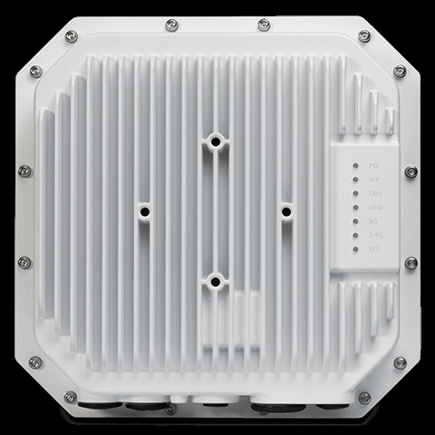

bp-ap1570-datasheet

R（触发场景）
- 室外园区 Wi-Fi 7 旗舰：需要光纤长距回传（SFP/SFP+）、专用三频扫描、BT 6.0、1GE PSE 下联（C3）
- AP1571（内置全向）vs AP1572（6x N 头外置 + 6KA 防雷）取舍
- 6GHz 未开放域室外：AFC + 6G 软切 5G（C4）；at 25W 降级核对（X7）
I（核心理念)
室外 Wi-Fi 7 旗舰"五射频"：三服务 2x2x3（9.328Gbps）+ 三频专用扫描 + Bluetooth 6.0/Zigbee；上联 10GE combo 口（RJ45 或 SFP/SFP+ 光口，支持有源/无源光纤长距回传），下联 1GE PSE 802.3at 给 IoT 设备供电；IP67、bt 50W；1571 内置全向、1572 外置 6x N 头（6KA 防雷、必须接地）（P18，<<
A1（选型差异）
- vs AP1561：同为室外 2x2x3/9.328G；1570 加 combo SFP+ 光回传、扫描射频、BLE 6.0、1GE PSE 下联、bt 供电、1572 外置天线版；1561 是 5GE/at 经济型
- AP1571 vs AP1572：1571 内置全向（5.8/8.0/6.2dBi）悬挂俯仰安装；1572 6x N 型母头自配天线（ANT0-1=5G、ANT2-3=6G/5G、ANT4-5=2.4G），抱杆/壁装，天线与套件另购
- vs AP1540：室内超高密选 1540；室外旗舰选 1570
- vs AP1362：1362 是 Wi-Fi 6 外置天线版；1572 是其 Wi-Fi 7 + 扫描 + 光回传升级
A2（规格速查表）
| 项目 | 规格 | 页码 |
|---|---|---|
| 射频架构 | 五射频：6GHz 2x2:2（5.76G，2SS EHT320，软件可切 5GHz）+ 5GHz 2x2:2（2.882G）+ 2.4GHz 2x2:2（688Mbps）+ 三频专用扫描（6/5/2.4GHz）+ Bluetooth 6.0/Zigbee（6dBm/-93dBm，内置天线 6.2dBi） | << |
| 聚合速率 | 9.328Gbps | << |
| MIMO/速率档 | MLO、OFDMA（多非连续 RU）、MU-MIMO、4096-QAM、512 压缩块确认、Triggered uplink、TxBF、FTM；EHT20-320 | << |
| 频段 | 2.4G/5G 四段/6GHz 四段 | << |
| 以太网口 | 上联 combo Eth0：10GE RJ45（100M-10G 802.3bz）或 SFP/SFP+，802.3bt PoE，EEE，MACsec；下联 1x 1GE PSE 802.3at；1x USB 2.0 Type C（5V 1A） | << |
| PoE/供电 | bt 50W：全功能；at 25W：上下联口禁用、无 PSE、USB 关、上联口降 5Gbps（X7） | << |
| USB-IoT | 1x USB 2.0 Type C（5V 1A） | << |
| 蓝牙 | Bluetooth 6.0/Zigbee（全系列最新 BT 版本）+ FTM | << |
| 天线 | AP1571 内置全向（H/V 双极化）：5.8dBi@2.4G / 8.0dBi@5G / 6.2dBi@6G；AP1572：6x N 型母头外置，内置 6KA 防雷、免额外避雷器但必须接地（X15） | << |
| 发射功率 | 聚合 30.8dBm@2.4G / 31.0dBm@5G / 28.2dBm@6G；巴西 24dBm | << |
| 工作温度 | -40°C ~ 65°C；湿度 10-90%；持续风 100MPH/阵风 165MPH | << |
| 防护 | IP67；工业级浪涌 | << |
| Mount | 1571 悬挂/俯仰（AP-MNT-OUT-H）；1572 抱杆/壁装（AP-MNT-OUT）；均另购 | << |
| 容量 | 每射频 16 SSID；每射频 256 客户端，合计 768/AP | << |
| 尺寸重量 | 243x243x85mm；2500g（1571）/2684g（1572）；MTBF 748,972h（85.5 年） | << |
| 管理平台 | Terra 5K / Cirrus 12K / Express 集群 255；OV2500 兼容 4K；SNMP 仅 v2 | << |
| 安全 | TPM 2.0、专用扫描射频无线防护、WPA3 CNSA/SAE、OWE、DPI、MACsec Eth0、AFC | << |
| 订购 | OAW-AP1571-RW/-US/-ME、OAW-AP1572-RW/-US/-ME（RW 禁 US, Japan） | << |
| 配件 | AP-MNT-OUT / AP-MNT-OUT-H、POEO75U-1BT-X-R；Outdoor Antennas TBC（X16） | << |
E（适用场景）
- 室外园区旗舰：光纤（有源/无源）长距回传 + 扫描防护 + PSE 下联摄像头/IoQ 设备一站齐（C3，<<
>>） - 6GHz 未开放域：6G 软切 5G 跑三射频 2.4+5+5（C4，<<
>>） - 需要外置天线定制波瓣的仓库/码头/沿线覆盖：AP1572（<<
>>） - BT 6.0 最新 IoT 生态 + FTM 室外定位
B（限制与坑）
- at 25W：上下联口禁用、无 PSE、USB 关、上联降 5G（X7，<<
>>）——必须 bt 50W - AP1572 免避雷器的前提是可靠接地（"AP must be grounded"，X15，<<
>>）：施工文档必须写接地要求 - 室外天线 "TBC" 未列明（X16，<<
>>）：报价注明不含天线 - RW 版禁售写法含 ME（与 1561 同，X19 关联）：US/ME/Japan 名录易误读
- SNMP 仅 v2（<<
>>）；管理规模数字核实（X24，<< >>） - 套件另购（X20）；数据表 Radio specification 误写 "Indoor"（<
>），以标题与 IP67 描述为准
来源：bp-stellar-ap-datasheets fulltext.md p117-128；verified.md C3/C4/P18/P23/P25/X7/X15/X16/X19/X20/X24/F5
仅供内部学习使用 · 教材版权归 ALE Training Services 所有